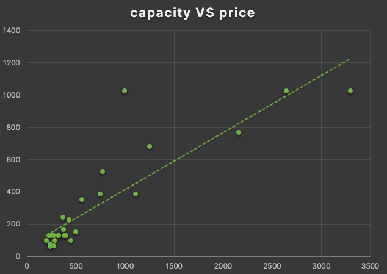
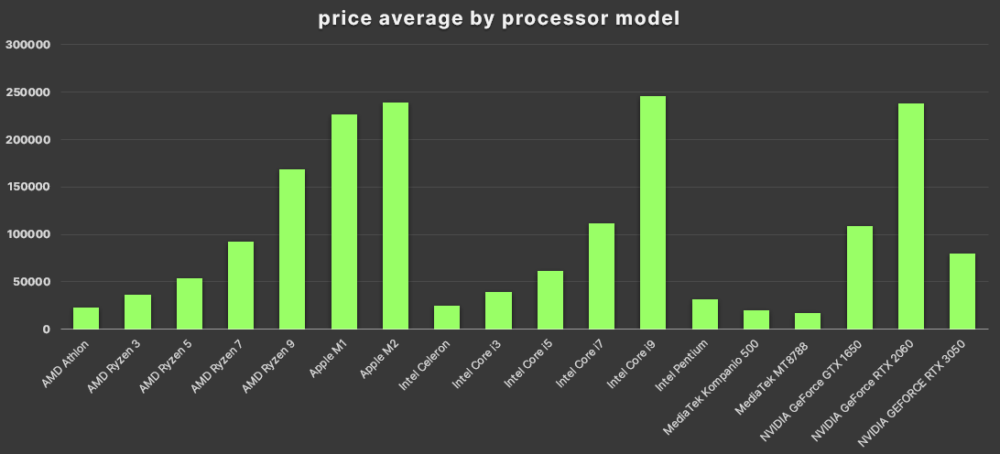

Imagine that your boss think that you are ready to solve a problem for
a new client, and you answer him with: yes! of course
The client is a Finance company, to work they use diverse computers
different from each other. They want all computers of the same
appearance and characteristics to improve their compatibility
You need to be careful selecting the computer, should be cheap, with
enough resources, that all components comes in one box preferently
and easy to maintain
You are free to choose the data from you need, and your audience
will be various teams in our and their company
My role
Project management
Research for data
Cleaning & documenting
Analyze
Make visualizations presentation
Asking
At this part I make some questions principally for myself to
determine more exactly What will I analyze, but in teams this phase
could change a lot
What themes am I exploring?
Computers, their sales, advantages and characteristics
What is the problem I am trying to solve?
Discover what PC will offer more possibilities, can be laptops or
desktops, buy separated components or all in one packages
Which metrics I will use to measure the
data in order to achieve the goal?
Number of sales, prices and PC reviews
Who are my stakeholder?
A big variety of workers with distinct tasks and objectives inside
out company and the company client
What is my audience?
Probably people of all types, origins, ages and studies
How can help my knowledges to the client to take decisions?
For me is a easy theme to understand and have seen that use
all in one laptops are recommended
Prepare the environment
In this phase you think a few more specific about your data, and
collecting it keeping in mind the bias
Then the type of data I am looking for is a little unexplored but
there are this four datasets in Kaggle that help me a lot
PC component price comparison: registers obtained from
different pages and stores through the web |
Original Kaggle dataset
Curry World laptop: registers obtained from a
store called Curry and the creator was using Selenium and Python |
Original Kaggle dataset
The next step was put all this in a directory system, naming each
file and folder with a standardized format like
name_day_month_year_v01
All this are in Kaggle, they has Creative Commons (CCO) Domain Public
License for that there no need give credits to the author to the
author, but you can give they a point in Kaggle üëç
Process and cleaning data
Firstly I choose Microsoft Excel to do this project because the
four datasets has the .CSV format
The integrity of the files is I expected, the most of registers
inside each dataset are not clean, this is to say with
NULLs
and blanks or the text is not enough coherent
Therefore it's necessary use this phase to clean the data because
there are errors inside the dataset. This is achieved with techniques
like
Filters to delete speedly the rows with blank cells
Formatting to convert text to numbers
Formulas like
=LEFT( , )
to substract the numbers from ratings cells
Find & Replacing
Column renaming because the tables was different types of names
and the standard is all lowercase separated by underscores
Analyze phase
I worked individually the four dataset because they have not enough
compatibility between columns being the only two common were the
price and rating. Then I ordered descently by price in all
Dataset 1
This is the
AmazonPC
dataset and first I realize that some rows
are accesories, delete all the accessories in the column name.
Here not seems like there's a tendency between price and rating
Dataset 2
This is the
Components
dataset and here there are categories,
I would like me to divide the dataset in categories but they
are eight
Only filter categories one by one copying the 10 cheapest
to another sheet making a table with eighty rows. Inside
that new sheet sum the most cheapest components of all and
the result is $ 114.88, not bad
Afterly I used functions as
=IF( , )
and
=AVERAGE( )
to calculate the price average of each category, the result
is: one common PC costs $ 1415.8 maybe ten times
the cheapest
Then I make one visualization with the component price
and component rating column
Dataset 3
This is the
Curry
dataset where the data is almost completely
clean and just now is visible that the best prices are in the
Lenovo Pads
Here something strange happen, the visualizations had too
many horizontal values as if there was more dimentions in
the data. I solved this making before Pivot tables
in a new sheet, a pivot table for processor capacities and
laptop sizes also for prices
I notice that laptop sizes often are similar whatever the
processor capacity, while the processor price and capacity
has a tendency or relation, I mean more price could be more
laptop capacity
Dataset 4
This is the
Laptop League
dataset and delete the word "Processor: "
in the cell's column processor, seems like the primebook are
the most economic option
I create a visualization between the price and the rating column
Here i will compare again processor and prices to confirm the
tendency but there is an issue, in the data there are
different generations for each processor model and I guess that
this is not necessary in this project
Again use a pivot table and then i collapse various generation
models to only one model manually
Then I make three different pivot tables to compare:
rating VS number_of_rating,
rating VS number_of_reviews and
so on. now it's not necessary to collapse the processor
generations
To finish i make the expected price and rating visualization
where the result was awesome for me
Now we have an insight from each individual dataset, is a good idea
do a reflection about all this information before to share all with
others
Share the results
Firstly this is the price and rating relation from the AmazonPC
dataset
This is the same comparison or relation but with the dataset
Components_scraper, remember this is components data from
distinct web stores
Now keep in mind, big part of the PC power is determined by the
processor, for that reason is normal use the processor capacity
as a measure of PC speed. Normally little processor power is
sold with reduced capacities and vice versa
Is convenient to know also if the PC size has something to do
with its processor capacity and this is the result

I needed to confirm if really there is one narrow relation
between the processor capacity and the price
And this is another way to Watch the result, I realize that
the first top bar would be the best quality-price option

Then to obtain processor visualizations was needed to group
the processor generation by model, from the Laptop League dataset
In this dataset there is more detailed information about the
ratings and is really interesting to me this data in this
project to confirm if the lower rating correspond to the computers
that we are looking for
We can notice that the unique relation is between number of
reviews and number of ratings, something that is not enough help.
At least know that lower prices doesn't equals to bad products
Let's go to confront the processor price and the rating has
been hide something important
To finish I wanna see how the processor are rated by their capacity
Even althought there is some with very low capacity, in general
the rating is uniform to all of them, therefore there is PCs
which has good rating, good price and good potential, seems a
better idea to choose a laptop
Conclutions
There is not tendency between the PC quality and its price
(according to AmazonPC, Components and Laptop League datasets)
The PC's price is approximated to its processor capacity,
altought you can find very good options at low cost
(according to Curry dataset)
There is not relation between processor capacity or the
Laptop size and the processor capacity (according to Curry
and Laptop League datasets)
Take action
Comming soon and to achieve a deeper data analysis I recomend
Looking for patterns between PC brands or components and
their quality
Put more details about the data origin and try to find some
type of bias within
What I learned
I almost had not knowledges about the Data analysis field that is
so widely mentioned in different contexts, as programmer think
that this is a job oportunity because is a few similar in the
structured thinking and in the tools to carry out the process
I liked the data analysis process and enjoyed make this project